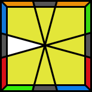
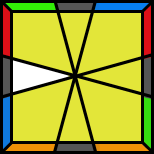
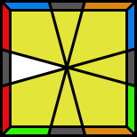
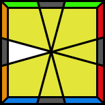
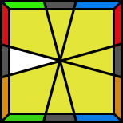

| Case | Alg |
|---|---|
|  | (1,0) / (0.3) / (1,4) / (1,4) / (1,4) / (1,4) / (1,4) / (1,4) / (1,4) / (1,4) / (1,4) |
|  | (1,0) / (0.3) / (nog wat) |
|  | (1,0) / (0.3) / (nog wat) |
 |
(1,0) / (0.3) / (nog wat) |
|  | (1,0) / (0.3) / (nog wat) |
|  | (1,0) / (0.3) / (nog wat) |